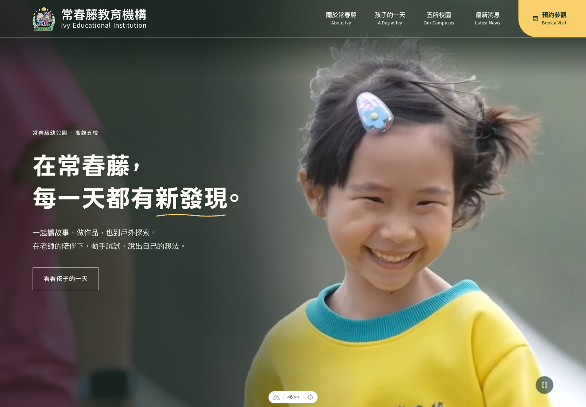

常春藤教育機構 ／ 開場動效提案
紅幕，為美好揭幕。
一個開場，三種期待。
讓孩子的每一天，從這裡展開。

01 / 03
經典對開
隆重、溫暖，帶一點典禮的期待。
厚實的酒紅絨幕由中央向左右打開，摺痕隨拉力逐漸收密，讓首頁從中間慢慢出現。
3.2 秒酒紅絨布
常春藤教育機構 ／ 開場動效提案
一個開場，三種期待。
讓孩子的每一天，從這裡展開。

隆重、溫暖，帶一點典禮的期待。
厚實的酒紅絨幕由中央向左右打開，摺痕隨拉力逐漸收密，讓首頁從中間慢慢出現。